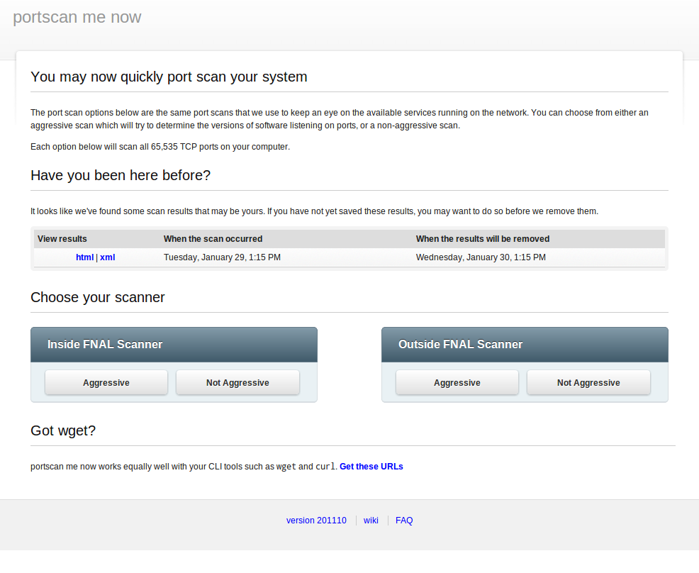

Welcome
The links below will allow you to click through screenshots of the various tools and activities that I have been involved in over the years.
If you have any questions, I'd be happy to answer them. My email address is available below.
Thanks,
Tim Rupp
caphrim007@gmail.com
-
fsf

fsfis an advanced security scanner farm and batch systemHave a looksavory

savoryis a malware URL aggregator and intelligence system.Have a lookportscanmenow
portscanmenowis a web frontend for the Nmap port scanner. It focuses on simplicity.Have a looknessquik

nessquikis a front-end for the Nessus Vulnerability ScannerHave a lookSolera DeepSee App for Splunk

Solera DeepSee App for Splunkwas developed to integrate Solera's DeepSee appliance functionality in the Splunk UI.Solera Greasemonkey Framework

Solera Greasemonkey Frameworkis a Greasemonkey script that integrate Solera's DeepSee appliance functionality in any webpage of your choosing.resolver

resolveris a real-time netflow name resolver. -
fsf

Splunkis an IT search engineWhat I did
- Complete design and implementation of Splunk search cluster. Search head, 10+ indexes, 25+ forwarders
- Development of custom Splunk Apps and Modules to support group (operations reports, ITIL, application monitoring, etc)
- Advanced knowledge of the Splunk search engine and best practices for searching
- Hundreds of millions of log entries a day; 200+ gigabytes
- Personally evaluated numerous SIM solutions to determine that a full-text search engine was the correct course of action. Saved millions of dollars in the process of choosing what was needed instead of what was the hot ticket item of the day.
puppet

puppetis IT automation software for system administratorsWhat I did
- Complete design and implementation of puppet infrastructure to manage 50+ machines and hundreds of pieces of software
- Development of custom puppet modules to manage in-house applications
- Had key insight into the need for this type of software to replace aging linux servers 2 years before they would be required to be replaced. Allowing for plenty of time to establish the infrastructure necessary to transition the systems in the future.
- Self-starter on the project. Required no guidance from management, relieving the burden on them.
- Saved countless man-hours and employee stress due to no longer having to be under-the-gun in transitioning close to 100 machines
nagios

nagiosis IT infrastructure monitoring softwareWhat I did
- Complete design and implementation of nagios infrastructure to manage 145+ servers and network attached devices
- Development of custom nagios checks to monitor in-house applications
- Single-handedly took control of all system administration tasks for a group that managed almost 100 servers.
- Self-starter on the project. Required no guidance from management, relieving the burden on them.
- Proved to management that a single individual with the right tools is capable of managing a large number of systems. This saves the organization money in the form of head-count, as those resources can instead be focused on devlivering great products.
git

gitis a distributed version control systemWhat I did
- Complete design and implementation of git infrastructure to manage source code and configurations for 40+ software tools
- Development of software versioning best practices, and education of group members on how to use the tools for more efficient development workflow
- Single-handedly took control of all existing source code, and system configurations, and implemented git repositories for them. This included legacy code that needed to be transitioned from CVS systems
- Self-starter on the project. Required no guidance from management, relieving the burden on them.
- Proved to management the benefit of having version control systems, by showcasing the flexability of the system when quick fixes needed to be created, or when massive new developments needed to be switched out to address a bug in the current release.
- This is simple tab 2s content. Now you see it!